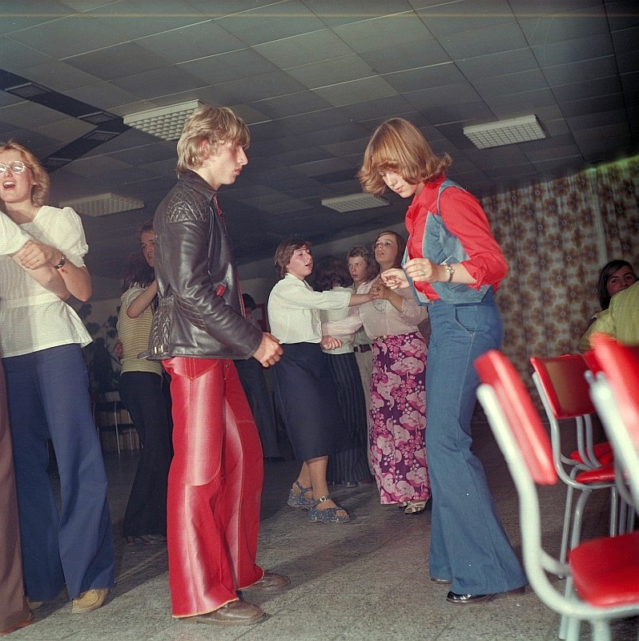

funky fashion of the 70s
The 1970s was a decade of fashion experimentation and individual expression. The fashion trends of the decade were a reflection of the social and cultural changes that were taking place at the time. One of the most iconic fashion trends of the 70s was the disco style. This trend was characterized by bright colors, sequins, and tight-fitting clothing. Disco fashion was all about glamour and excess, with popular styles including jumpsuits, flared pants, and platform shoes. Another popular fashion trend of the 70s was the hippie style. This style was inspired by the counterculture movement of the 1960s and was all about embracing natural materials and free-flowing designs. Key features of the hippie style included long, flowing skirts, tie-dye shirts, and bell-bottom pants. The hippie style also embraced ethnic influences, such as Native American and African designs, which were incorporated into clothing and accessories. Lastly, punk fashion emerged in the late 70s, characterized by its rebellious and anti-establishment aesthetic. This trend was all about expressing individuality through unconventional clothing choices, such as ripped t-shirts, leather jackets, and safety pins. Punk fashion also included bold makeup and hairstyles, such as brightly colored hair and heavy eyeliner. This trend was a response to the mainstream fashion industry, with punks rejecting the idea of conforming to traditional beauty standards.
